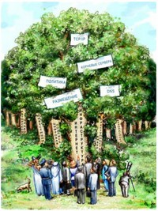
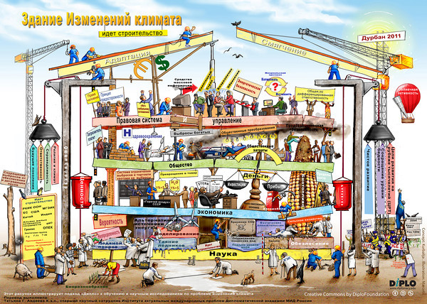

Сегодня:
Инструментарий управления Интернетом
Режим управления интернетом находится на очень ранней стадии развития. Опыт других международных режимов (например, в области окружающей среды, воздушного транспорта, контроля над вооружениями) показывает, что в рамках режимов часто создаются общая система взглядов, ценностей, представлений о причинно-следственных связях, единые способы аргументации, терминология, специальная лексика, жаргон и сокращения.
Любой режим управления интернетом будет сложным, поскольку должен будет включать множество вопросов, участников, механизмов, процедур и инструментов.
У вопросов, связанных с интернетом, есть по меньшей мере пять измерений: инфраструктурное, правовое, экономическое, связанное с развитием и социокультурное. В каждом из этих измерений участвует множество лиц - как в частном, так и в государственном секторе. Большинство из них (операторы "корневых" серверов, интернет-провайдеры, специалисты по вопросам защиты торговых марок и проблемам развития, активисты гражданского общества и т. д.) принадлежат к очень специфическим и развитым профессиональным культурам.
Сложность управления интернетом показывает, что мышление линейное, основанное на поиске единственной причины и подходе "или-или", не годится для решения соответствующих вопросов. Поэтому требуются новые инструменты познания, адекватные этой сложности и предлагающие общие подходы и руководящие принципы.
Основные цели создания такого "набора инструментов" для управления интернетом таковы:
- упорядочить инструменты, используемые в настоящий момент в дискуссиях по управлению интернетом;
- создать дополнительные инструменты познания;
- способствовать включению в процесс управления интернетом новых участников, предоставив им такие инструменты и тем самым помогая им лучше понять сущность проблем, позиций и происходящих изменений.
Инструментарий управления интернетом состоит из:
Как и сам процесс управления интернетом, этот инструментарий находится в постоянном изменении. Подходы, модели, руководящие принципы и аналогии появляются и исчезают в зависимости от их уместности и важности для процесса переговоров в данный момент.
Модели и подходы
Как управление интернетом в целом, так и относящиеся к этой области отдельные вопросы давно являются предметом политических дискуссий и научных споров. Постепенно сложилось несколько подходов и моделей, представляющих собой те измерения, по которым можно обнаружить различия между позициями участников переговоров, а также между профессиональными и национальными культурами. Выявление общих подходов и моделей может уменьшить степень сложности переговоров и помочь выстроить общую "систему координат".
До сегодняшнего дня противостояние между "узким" и "широким" подходами к управлению интернетом является одним из основных вопросов, отражающих различные интересы в процессе управления интернетом. При "узком" подходе внимание обращается в первую очередь на инфраструктуру интернета (систему доменных имен, IP-адресов и "корневых" серверов) и на позицию ICANN как ключевого игрока на этом поле.
В соответствии с "широким" подходом переговоры по управлению интернетом должны выйти за пределы вопросов инфраструктуры и обратиться к другим проблемам: правовым, экономическим, социокультурным, связанным с развитием. Проведение различия между этими двумя подходами особенно важно на ранней стадии переговоров - при определении повестки дня.
"Широкий" подход неявно поддержан в Декларации WSIS, давшей WGIG мандат на "определение проблем государственной политики, касающихся управления интернетом". Этот подход также преобладает в политических и научных дискуссиях по вопросам управления интернетом.
Сегодня дискуссия перешла от стадии "или-или" к стадии определения приоритетов и наиболее приемлемого баланса между "узким" (вопросы, связанные с ICANN) и "широким" (другие аспекты управления интернетом) подходами.
Руководящие принципы
Руководящие принципы представляют собой определенные ценности и интересы, утверждению которых должен способствовать складывающийся режим управления интернетом. Некоторые из этих принципов - такие, как прозрачность и открытость для участия, были одобрены на WSIS. Другие были внедрены неявно, в дискуссиях по вопросам управления интернетом.
Аналогии
Хотя аналогии часто обманчивы, они менее обманчивы, чем что-либо другое.
Сэмюэл Батлер
Аналогия помогает нам понимать новые явления через уже известные. Проведение параллелей между примерами из прошлого и сегодняшним днем, несмотря на связанные с этим риски, является ключевым мыслительным процессом в праве и политике. Большинство судебных дел, связанных с интернетом, решаются посредством аналогий.
Использование аналогий в управлении интернетом имеет ряд важных ограничений. Во-первых, интернет - широкое понятие, охватывающее разнообразные услуги: электронную почту (аналогия с телефоном), "всемирную паутину" WWW (аналогия с теле- и радиовещанием) и базы данных (аналогия с библиотекой). Любая аналогия с какой-либо одной технологией может излишне упростить понимание интернета.
Во-вторых, по мере сближения различных телекоммуникационных и медиауслуг традиционные различия между ними исчезают. Например, с внедрением технологии интернет-телефонии (VoIP) становится все сложнее провести разграничение между интернетом и телефонной связью.
Несмотря на эти ограничения, аналогии являются мощным и основным познавательным инструментом.
Классификация вопросов управления Интернетом
Классификация может помочь участникам процесса управления интернетом:
- четко определить основные вопросы, требующие обсуждения;
- снизить уровень переговорного "шума", вызванного непоследовательной трактовкой основных концепций;
- избежать дублирования, когда одни и те же вопросы рассматриваются на нескольких форумах;
- поддержать необходимое равновесие между широким подходом и конкретными вопросами, избежав тем самым ситуации, когда "за деревьями не видно леса".

В конечном счете тщательная подготовка перечня связанных с интернетом вопросов должна сделать процесс переговоров по управлению интернетом более эффективным. С экономической точки зрения, это должно снизить транзакционные издержки - иными словами, сократить общее время переговоров. Это особенно важно для стран с ограниченными финансовыми и людскими ресурсами, поскольку позволит им принимать более активное участие в управлении интернетом. Неясный и запутанный процесс переговоров требует непропорционально больших затрат людских ресурсов и времени.
Разработанная DiploFoundation классификация аспектов управления интернетом разбивает все вопросы на пять групп. Чтобы приблизить терминологию к миру дипломатии, Diplo использует понятие "корзина". (Оно было введено в дипломатическую практику во время Совещания по безопасности и сотрудничеству в Европе (СБСЕ)). С 1997 г., когда фонд Diplo начал разработку классификатора, используются пять корзин:
- инфраструктура и стандартизация;
- правовые аспекты;
- экономические аспекты;
- аспекты, связанные с развитием;
- социокультурные аспекты.
Модель "пяти корзин" метафорически представлена иллюстрацией "Строящееся здание".
